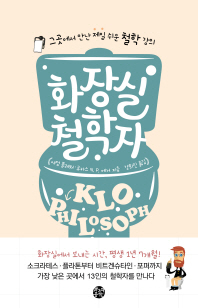
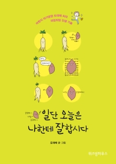

What I Read
(1) 화장실 철학자 (그곳에서 만난 제일 쉬운 철학 강의)
사람은 평생 동안 1년 7개월하고도 15일을 화장실에서 보낸다고 한다. 그중 변기 위에 앉아 있는 시간만 해도 92일이나 된다는데, 기왕지사 그럴 바에는 하루 평균 10~20분쯤 되는 그 시간을 좀 더 의미 있게 보내는 편이 훨씬 더 유익하지 않을까?
(2) 날마다 천체 물리
많은 사람들이 천문학을 포함한 과학을 우리와 상관없는 세상의 일로 여기지만, 때때로 밤하늘을 올려다보며 ‘어두운 저 하늘이 함의하는 바는 무엇인가?’, ‘우주에서 나는 어떤 자리를 차지할까?’와 같은 근본을 묻는 질문들에 의미 있는 답을 찾고 싶어 한다.
이와 같은 질문에 대한 답을 찾기 위해 천체 물리학의 최전선에서 벌어지는 사건들 중 적어도 핵심적인 사항들에 대해 알고자 하는 사람들에게 이 책은 친절한 가이드가 되어준다.
(3) 일단 오늘은 나한테 잘합시다
SNS 500만 뷰 화제의 만화 '행복한 고구마'를 그린 도대체 작가의 그림 에세이. '어쩐지 의기양양 도대체 씨의 띄엄띄엄 인생 기술'이라고 부제가 붙은 이 책에는 어떤 상황에서도 기필코 즐거움을 찾아내는 도대체 작가의 순간포착 폭풍공감 에피소드가 가득하다.
